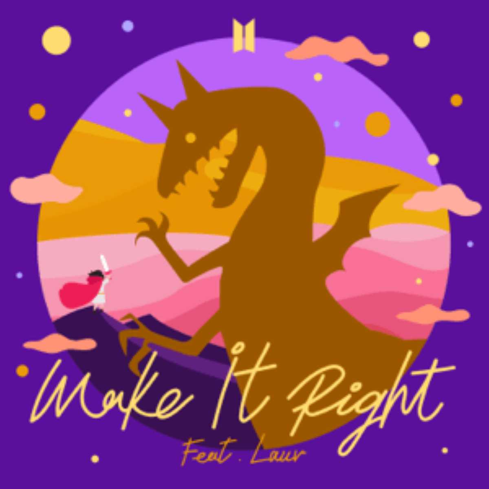

Snap
Genre: Dream Pop / Indie
"Snap" by Rosa Linn is a lyrical exploration of fleeting memories and the bittersweet moments of life. Released in 2022, the song beautifully blends calming rhythms with a haunting melody, painting a picture of nostalgia. It's a perfect listen for those quiet, introspective nights.

Make It Right
Genre: Soulful Pop / K-Pop
BTS and Lauv's "Make It Right" is a soothing anthem of redemption and emotional connection. Its heartfelt lyrics, coupled with a melodic tune, evoke a sense of hope and self-discovery. A timeless track for those seeking solace in music.